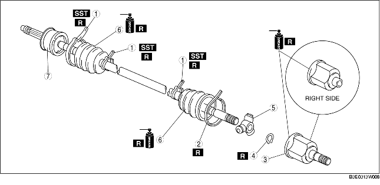

1. Disassemble in the order indicated in the table.
2. Assemble in the reverse order of disassembly.

.
|
1
|
Boot band (wheel side, transaxle side: smaller diameter)
|
|
2
|
Boot band (transaxle side larger diameter)
|
|
3
|
Outer ring
(See Outer Ring Disassembly Note.)
(See Outer Ring Assembly Note.)
|
|
4
|
Snap ring
|
|
5
|
Tripod joint
|
|
6
|
Boot
(See Boot Disassembly Note.)
(See Boot Assembly Note.)
|
|
7
|
Shaft and ball joint component
|
1. Remove the boot band using end clamp pliers.
1. Pry up the boot band at the points indicated in the figure using pliers and remove the band.
1. Place an alignment mark on the drive shaft and outer ring.
2. Remove the outer ring.
1. Place an alignment mark on the shaft and tripod joint.
2. Remove the snap ring using snap ring pliers.
3. Remove the tripod joint from the shaft.
1. Wrap the shaft splines with tape.
2. Remove the boot.
1. Fill the inside of the new dust boot (wheel side) with grease.
2. Install the boot with the drive shaft spline still wrapped with vinyl tape.
3. Remove the vinyl tape.
1. While aligning the marks on the shaft and the tripod joint, insert the tripod joint using a bar and a hammer.
2. Insert a new snap ring using snap ring pliers.
1. Fill the outer ring and boot (transaxle side) with the specified grease.
2. Assemble the outer ring.
3. Set the drive shaft to the standard length.
4. Release any trapped air from the boots by carefully lifting up the small end of each boot with a cloth wrapped screwdriver.
5. Verify that the drive shaft length is within the specification under atmospheric pressure inside the boot.
1. Pry up the boot band at the points indicated in the figure using pliers and tighten the boot band.
1. Adjust opening width A by turning the adjusting bolt of the SST.
2. Crimp the wheel side small boot band completely closed so there is no gap using the SST.
3. Verify that the boot band does not protrude from the boot band installation area.
4. Fill the boot with the repair kit grease.
5. Adjust opening width A of the SST to the specification.
6. Crimp the wheel side large boot band completely closed so there is no gap using the SST.
7. Verify that the boot band does not protrude from the boot band installation area.